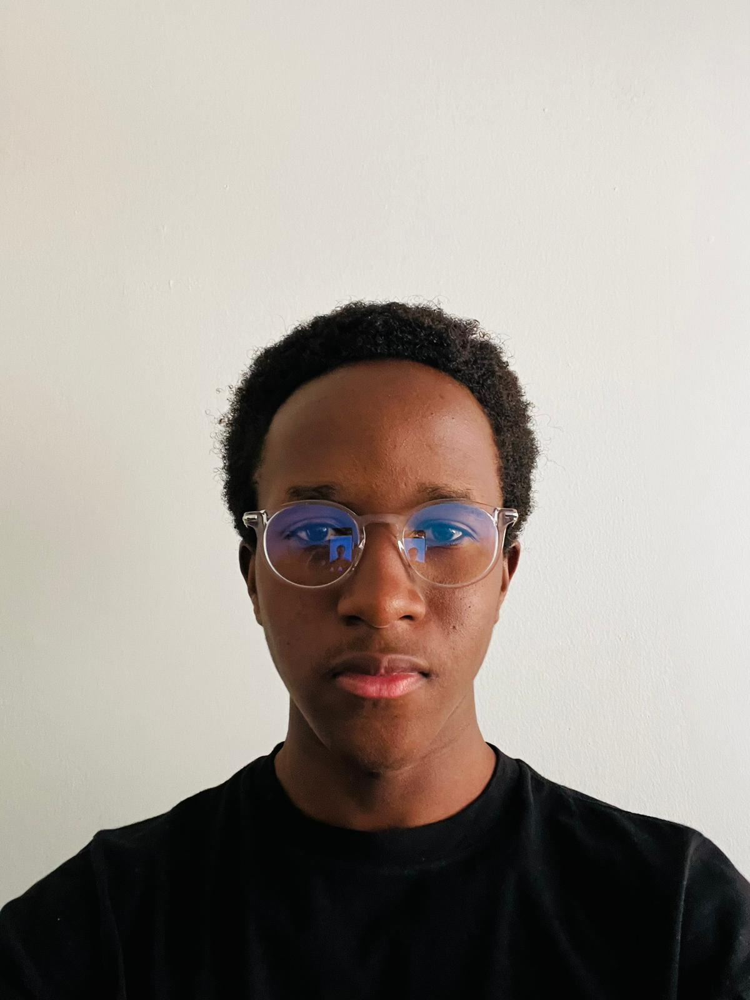

Emmanuel O. Mokua

Current Address: 2251 Sherman Avenue NW. -- Washington D.C. 20001
Github
LinkedIn
SUMMARY
A dynamic and impact-driven sophomore computer engineering major with a passion for entrepreneurship ,software
development, cryptography & artificial intelligence with a proven track record in project management.
EDUCATION
Howard University (Washington, DC)
Expected Graduation Date: May 2026
Bachelor of Science in Computer Engineering, 3.63/4.0 GPA
Minor in Computer Science
TECHNICAL SKILLS
- Python 3
- JavaScript
- C++
- VHDL
- MIPS Assembly
- Project Management
- React
- UI/UX Design
- Swift
- HTML5
- CSS
- Figma
- Fusion 360
- PCB Fabrication
- Quantitative Research
PROJECT EXPERIENCE & FREELANCE WORK
February 23, 2024 --- Google Office --- Washington, DC
Won 1st place in the 3rd Annual Google HBCU Hackathon.
-
Created a music app that allows users to generate an entire playlist based on their current mood or feeling in under 5
minutes and incorporated inclusive design principles to ensure our app can be used by everyone.
-
Utilized Youtube Search API, Google Search API, and GEMINI API to search for the music and play it on the app, render
album photos on the app and query gemini on playlist recommendations. Also used React Native to build a cross
platform app that was could be used by a wide variety of users.
December 2022 to January 2023 --- GreenSpacesKE --- Remote
Revamped a small e-commerce business website and sales funnels resulting in a 35% increase in net sales.
-
Used JavaScript, Django, MongoDB & implemented various APIs to build out a database that we used to autonomously
track ad spend, CPCs, inventory & customer purchasing behavior that was helpful in optimizing and tracking the efficacy
of our Facebook ad campaigns.
-
Improved page load times, implemented consistent design layouts & conducted usability testing for the company’s
website, enhancing user experience.
WORK EXPERIENCE
Begun Fall 2023 (In Progress) --- Howard University --- Washington, DC
Role: Undergraduate Research Assistant
Worked under an experienced graduate student and a systems design professor to develop an experimental testbed for 5G
software radio system.
-
Conducted in-depth literature reviews to stay abreast of the latest advancements in 5G technology.
-
Cloned and run the srsRAN project on a local machine and built out test vectors to configure a USRP device that we
used to conduct various radio frequency tests.
Summer 2023 --- Howard University --- Washington, DC
Role: Computer Aided Desing Tutor
Oversaw a group of 40+ middle school students and taught them engineering design processes and how to go about the basic
process of ideating a project and bringing it to life through TinkerCAD and 3D printing.
-
Utilized Fusion360 & TinkerCAD, to guide students in designing their own personal projects and taught them the basics
of 3D printing.
-
Developed and implemented tailored lesson plans to accommodate varying skill levels within the student group to
ensure each student participated and gained design skills from the program.
Fall 2023 --- PwC x Paragon One --- Remote
Contributed to the development of donor outreach strategies for World Learning Inc.
-
Developed some Python scripts to analyze donor data to identify key trends, track donation patterns and identify giving
trends, resulting in the implementation of targeted outreach initiatives.
-
Collaborated with a cross-functional team to create compelling materials for donor engagement and
presented findings and recommendations to project stakeholders, demonstrating effective communication skills.
ACTIVITIES & AWARDS
- 1st Place @ Google 3rd Annual HBCU Hackathon
- Howard University & PNC National Center for Entrepreneurship Impact Award
- Meta Above & Beyond Computer Science Program
- IEEE Student Member
- Howard University Entrepreneurial Organization Member